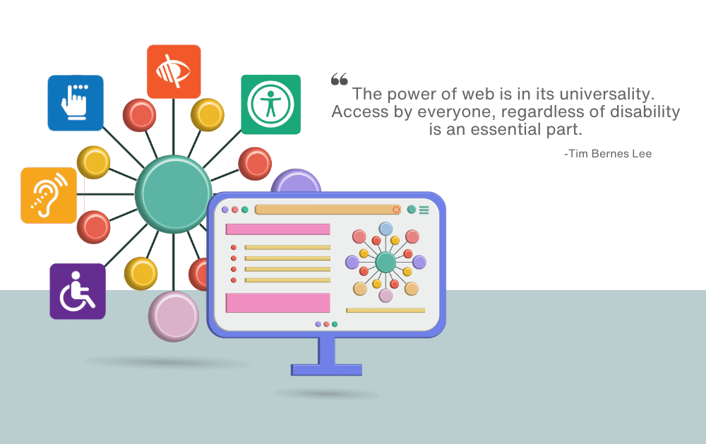
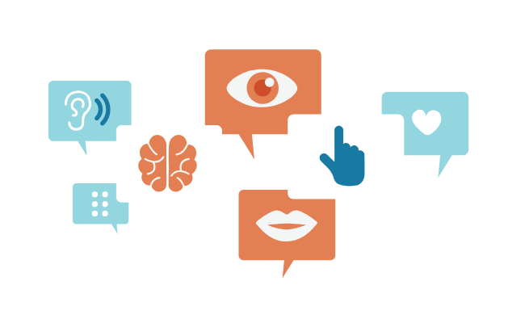
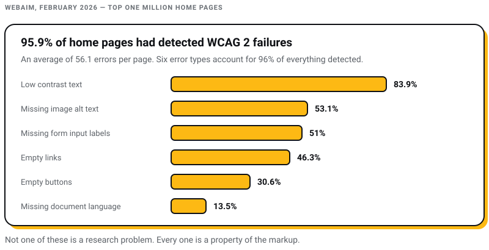
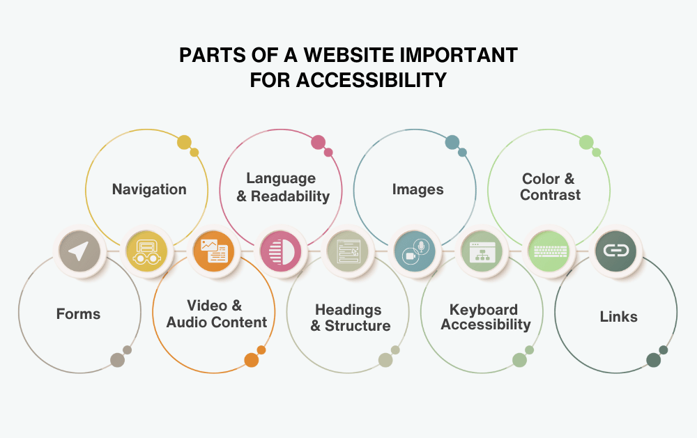
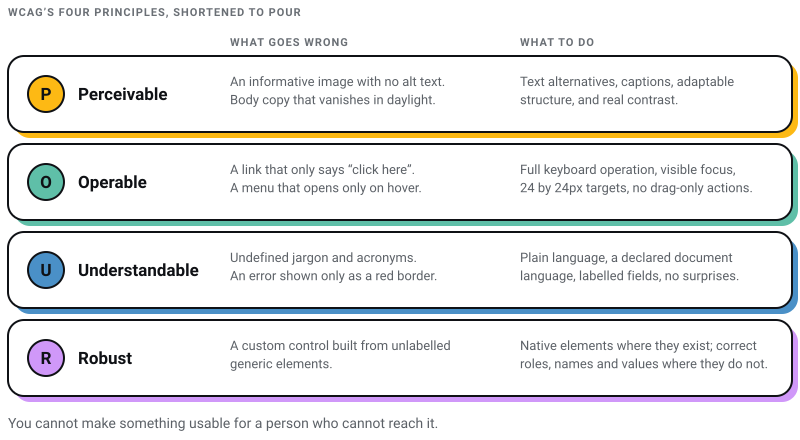
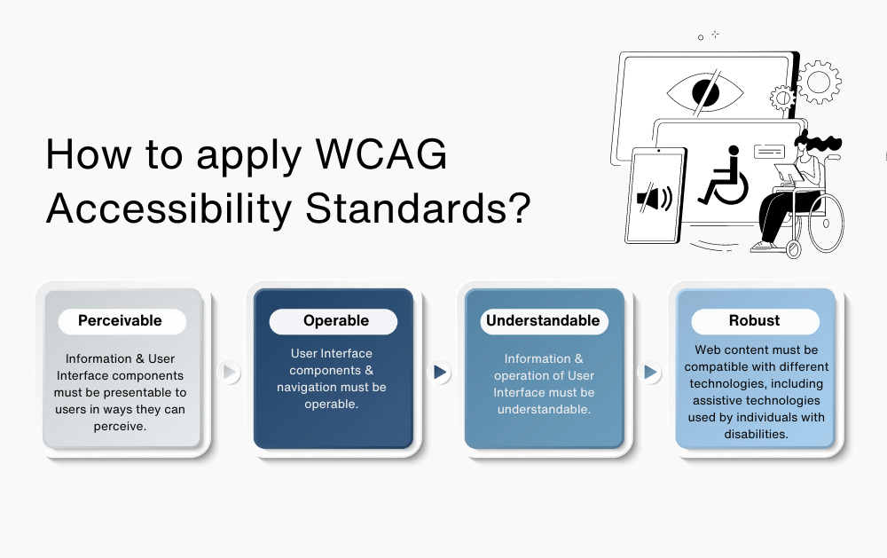
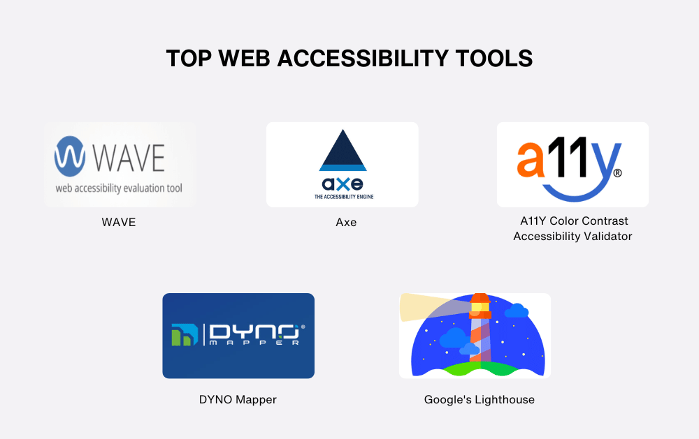
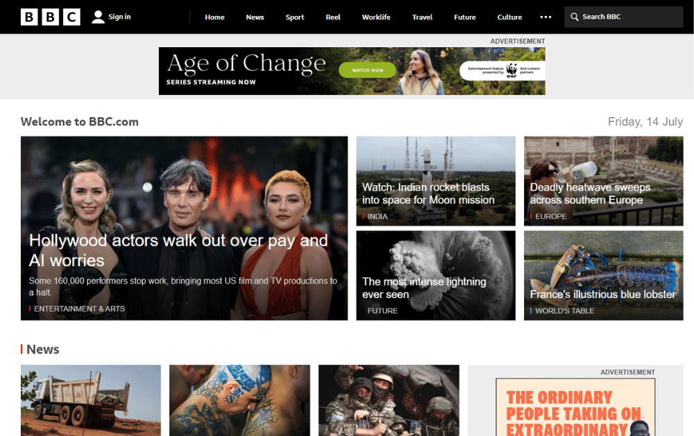
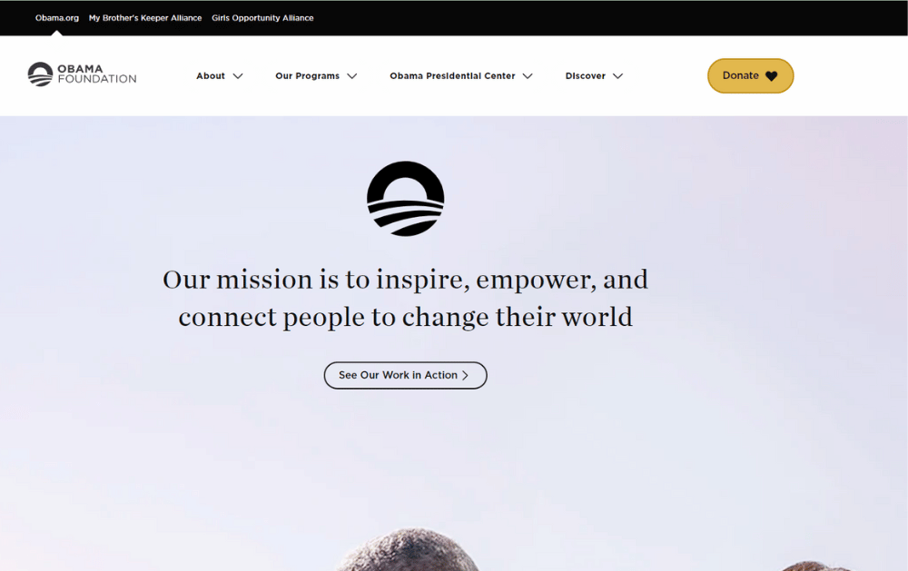
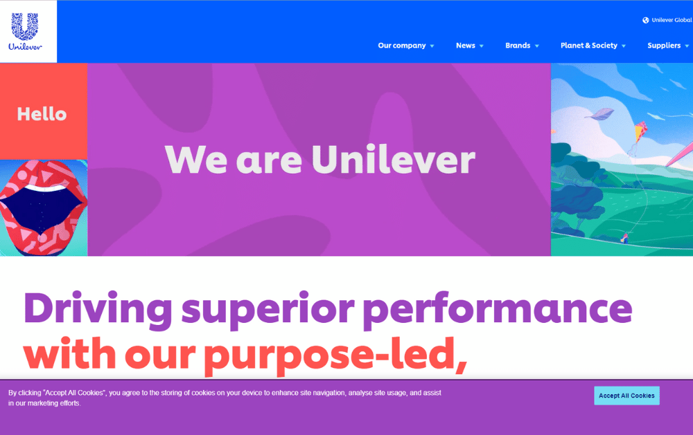

WEB DEVELOPMENT
WEB DEVELOPMENT
AI Website Builders vs Custom Development: Where the Shiny Tools Actually Break
AI website builders are fast, but are they right for your business? Discover where they excel, where they fail, and when custom development is the…

I run a web design studio in Salt Lake, Kolkata. For most of the years I have been doing this, accessibility arrived as an afterthought: a line item added after launch, if at all, and argued for on goodwill. That argument is finished. Accessibility now has dates attached to it, and several of the dates have already gone past.
Here is the part almost every guide written for an Indian audience leaves out. If you sell to consumers in the European Union from a shop in Kolkata, the European Accessibility Act has applied to your checkout since 28 June 2025. It does not ask where your servers sit or where you are registered for GST. Closer to home, the Supreme Court held on 30 April 2025 that digital access is part of the right to life under Article 21, and SEBI put digital accessibility on a mandatory compliance footing for every entity it regulates on 31 July 2025.
So I have organised this the way I would brief a client: what actually binds you first, then what to build. The technical standard is WCAG. The obligations are local, and they are more specific than most people expect. Every date and figure below links to the document it came from, so you can check me rather than trust me.
| If this describes you | What applies | Effective | What to build to |
|---|---|---|---|
| You sell to consumers in the EU: e-commerce, e-books, consumer banking, passenger transport, e-readers | European Accessibility Act, Directive (EU) 2019/882 | Member States apply the measures from 28 June 2025 | The accessibility requirements in Annex I of the directive, as transposed by each Member State |
| You run an Indian government website, portal or app | GIGW 3.0, with STQC certification | Current version | WCAG 2.1 Level AA |
| You are a SEBI regulated entity | SEBI circular SEBI/HO/ITD-1/ITD_VIAP/P/CIR/2025/111 | 31 July 2025 | Mandatory compliance under the RPwD Act 2016 and its rules |
| You are an establishment covered by India's RPwD Act | Section 40, read with Rule 15(1)(c)(iii) of the RPwD Rules | Notified 2023 | Accessibility for ICT Products and Services, Parts I and II |
| You run a US state or local government site | DOJ ADA Title II web rule | 26 April 2027 for populations of 50,000 and above; 26 April 2028 for smaller entities and special districts | WCAG 2.1 Level AA |
| You are a private business in the US | No federal web standard. The DOJ rule covers state and local government only | Not applicable | WCAG 2.2 Level AA, as a matter of judgement rather than regulation |
My own rule is simpler than the table: build to WCAG 2.2 Level AA and you have satisfied every row of it with room to spare. Building to the strictest applicable standard once is cheaper than maintaining a different standard per market, and it is the only version of this work that survives a change of law without a re-audit.

Website accessibility means people can use your site regardless of how they perceive it, operate it or understand it. That covers more people than the phrase usually suggests. The World Health Organization estimated in its March 2023 fact sheet that 1.3 billion people, about 16% of the world's population, experience significant disability.
The disabilities that shape web design decisions are the ordinary ones:
Two things I would add from doing this work. First, most of the population moves in and out of these categories: a broken wrist, a bright afternoon, a noisy train. Second, accessibility failures are rarely exotic. They are missing alt text, unlabelled form fields and grey-on-grey body copy shipped by a team that never tabbed through its own page.
These three get used interchangeably and they are not the same thing.
Accessibility is whether a product can be used by people with disabilities at all. It is a floor, and it is testable. Either the button has an accessible name or it does not.
Usability is whether a product is efficient and pleasant to use once it can be used. A form can be perfectly accessible and still be miserable. Accessibility does not guarantee usability, and a site that clears WCAG but takes eleven steps to check out has solved the legal problem and not the human one.
Inclusion is wider again: language, literacy, connection speed, the age of the device in someone's hand. In India that last one is not a footnote. A page that only behaves on a flagship phone over fibre is excluding people whether or not it passes an automated audit.
Accessibility is the foundation of the other two. You cannot make something usable for a person who cannot reach it.
The Web Accessibility Initiative (WAI), part of the World Wide Web Consortium (W3C), develops and publishes the Web Content Accessibility Guidelines. Everything else in this article is a government or a regulator pointing at WCAG and adding a deadline.
This is where most accessibility articles are quietly out of date, and it matters, because a business that thinks it is compliant against an old version is not compliant.
WCAG 2.2 is a W3C Recommendation dated 12 December 2024. It adds nine success criteria to WCAG 2.1 and removes one, Success Criterion 4.1.1 Parsing, which is now marked obsolete. The nine additions are worth knowing by name because they are the ones your existing site has probably never been tested against:
Read that list next to a typical Indian e-commerce checkout and you will see the problem immediately. Redundant Entry and Accessible Authentication are aimed squarely at OTP-and-retype flows.
WCAG 3.0 is still a Working Draft, dated 3 March 2026, and the W3C says of it that it is "inappropriate to cite this document as other than a work in progress". Treat any proposal that defers work until WCAG 3.0 arrives as a proposal to miss a deadline. Nothing in a draft relieves you of an obligation that has already commenced.

I am going to argue this with WebAIM's data rather than with sentiment. WebAIM tests the home pages of the top one million sites every year. Its February 2026 edition found that 95.9% of home pages had detected WCAG 2 failures, up from 94.8% a year earlier, at an average of 56.1 errors per page. Six error types account for 96% of everything detected: low contrast text on 83.9% of pages, missing image alt text on 53.1%, missing form input labels on 51%, empty links on 46.3%, empty buttons on 30.6% and a missing document language on 13.5%.

Two conclusions follow, and they point in opposite directions.
The pessimistic one is that the web is getting worse, not better, in the year the compliance deadlines landed. The optimistic one is that the failures are boring. Contrast, alt text and form labels are not research problems. They are a fortnight of unglamorous work by a developer who has been told to do it, and they will move you further than any overlay widget on the market.
Beyond the audit, the arguments that actually move a budget decision:
Legal exposure is now dated, not theoretical. The obligations set out further down this page have commencement dates in the past.
Accessible markup is better markup. Real headings, real labels, real link text and a sane document outline are the same things a search crawler and a language model use to understand a page. This overlaps heavily with the structural work in our web design process guide.
It fixes the site for everyone. Captions get watched on mute in an office. Keyboard support gets used by power users. Contrast gets appreciated by anyone outdoors in a Kolkata April.
It is a procurement gate. Enterprise and government buyers increasingly ask for an accessibility position before they ask for a quote, which is why it belongs on the list of questions to ask before hiring a web design agency.
It is the right thing to do. I have put this last deliberately. It is true, and it is also the argument that has historically failed to get budget approved. The deadlines are what get budget approved.

The barriers people hit are consistent, and they map almost one for one onto the WebAIM failure list above:
An accessible site, then, is one where:
Accessibility compliance means a site meets a named standard at a named level, and can be shown to. The named standard is almost always WCAG, and the named level is almost always AA. AAA is not a realistic target for a whole site and the W3C has never suggested it should be.
WCAG is the international standard for web accessibility, published by the W3C. It is organised into four principles, and every success criterion sits under one of them. The current version is 2.2, a W3C Recommendation since 12 December 2024. If a proposal, an audit or a compliance report you are handed still refers to WCAG 2.0 as the current standard, that document is two versions behind and I would question what else in it is stale.
The four principles are usually shortened to POUR:


What goes wrong:
What to do:
What goes wrong:
What to do:
What goes wrong:
What to do:
What goes wrong:
What to do:

Source: sonix.ai
The honest list is short:
Traffic and conversion uplift are missing from that list on purpose. They are sold as benefits of WCAG compliance constantly, and I could not find a study behind the numbers that I would put my name to. A figure that sounds right is worse than no figure.
This is the section that dates fastest and the one most guides get wrong, so each claim below is linked to the document it comes from.
India is usually written up as having no digital accessibility law. That is wrong, and it has been wrong for years.
The RPwD Act 2016 and its rules. Section 40 of the Rights of Persons with Disabilities Act 2016 empowers the Central Government to lay down standards of accessibility for information and communication, including appropriate technologies. Under Rule 15 of the RPwD Rules, the government has notified Accessibility for the ICT Products and Services, Parts I and II at Rule 15(1)(c)(iii). This is not guidance addressed to the technology industry. It is a standard notified under a statute.
GIGW 3.0. The Guidelines for Indian Government Websites are developed jointly by the National Informatics Centre, the STQC Directorate and CERT-In. Version 3.0 is current, and it "ensures conformity with Level AA of WCAG 2.1", an upgrade from GIGW 2.0, which sat on WCAG 2.0. Government bodies are expected to assess their sites against GIGW 3.0 and obtain STQC certification. If you build for a ministry, a state department or a PSU, this is your specification and WCAG 2.1 AA is your floor.
The Supreme Court, 30 April 2025. In Pragya Prasun and Amar Jain, a bench of Justices J.B. Pardiwala and R. Mahadevan held that the right to digital access is part of Article 21, and issued directions to make eKYC accessible to people with visual impairments and to acid-attack survivors with facial disfigurement. Digital accessibility in India is now a constitutional question, not a procurement preference.
SEBI, 31 July 2025. SEBI issued circular SEBI/HO/ITD-1/ITD_VIAP/P/CIR/2025/111, titled Rights of Persons with Disabilities Act, 2016 and rules made thereunder — mandatory compliance by all Regulated Entities, and followed it with compliance guidelines in September 2025. If you build for a broker, an AMC, an investment adviser or a research analyst, accessibility is a regulatory obligation with a reporting trail, not a nice-to-have.
Four separate obligations, none of them obscure, and almost no Indian web design brief mentions any of them. That gap is the whole reason this section exists.
The European Accessibility Act is Directive (EU) 2019/882. Article 31 required Member States to adopt implementing law by 28 June 2022 and to apply those measures from 28 June 2025. That date has passed.
Article 2(2) lists the services in scope for consumers after 28 June 2025, and the list ends with e-commerce services. Article 3 defines those as "services provided at a distance, through websites and mobile device-based services by electronic means and at the individual request of a consumer with a view to concluding a consumer contract". That is an online shop, described precisely.
The point Indian exporters keep missing is the definition of a service provider. Article 3 defines one as "any natural or legal person who provides a service on the Union market or makes offers to provide such a service to consumers in the Union". Being established in Kolkata is not an exemption. Offering to sell to a consumer in Dublin or Düsseldorf is what puts you in scope.
There are two limits worth knowing:
The Americans with Disabilities Act is cited constantly in accessibility marketing, usually with the implication that it sets a web standard for every business. It does not.
The Department of Justice published a web accessibility rule in the Federal Register on 24 April 2024. It requires WCAG 2.1 Level AA, and it applies to state and local government entities: agencies, public schools and universities, transit agencies, libraries, courts and special districts. The DOJ's own fact sheet is explicit that the rule does not address Title III, which is the part of the ADA covering private businesses.
An Interim Final Rule published on 20 April 2026 extended the compliance dates. Entities serving populations of 50,000 or more now have until 26 April 2027; smaller entities and special district governments have until 26 April 2028. The DOJ's stated reason was that it had overestimated how far the tooling and the staffing had come.
For a private business selling into the US, there is no federal web accessibility regulation to comply with. What there is instead is litigation risk under Title III, which is a different kind of problem and one I am not qualified to size. There is no lawsuit count or settlement figure on this page, because those numbers circulate constantly and almost always trace back to a vendor with an overlay to sell.
Accessible design is the deliberate design of products, services and environments so they can be used by people with disabilities. Inclusive design considers the full range of human difference: ability, language, culture, gender, age, income, device.
Both aim to widen who can use a thing, and both start by considering people the design team is not. The difference is scope. Accessible design has a testable standard behind it. Inclusive design does not, and that is its strength and its weakness at once.
They meet in process, which is the part teams skip. Barriers are created early, in the sketch, by designers who unconsciously design for themselves. No amount of remediation later is as cheap as one accessibility review during design.

One caveat before the list. Automated tools find the mechanical failures: contrast, missing alt, missing labels, empty controls. Those are exactly the six categories that WebAIM says account for 96% of detected errors, so the tools are genuinely worth running. They cannot tell you whether your alt text is meaningful, whether your focus order makes sense or whether your error message helps. That part is manual, and there is no product that removes it.
WAVE by WebAIM is the fastest way to get a first read on a page. Enter a URL and it overlays errors, alerts and structure directly on the rendered page, which makes it easy to show a client what is actually wrong rather than handing over a report.
axe by Deque is the engine most other tools are built on, and the browser extension is the one I keep open during development. It is deliberately conservative: it reports issues it can prove, which means a clean axe run is a floor and not a pass.
Lighthouse ships inside Chrome DevTools and runs an accessibility category alongside performance and SEO. Treat the accessibility score as a smoke alarm rather than a certificate. A perfect score on a page nobody can navigate by keyboard is a common and misleading outcome.
If you have seen NoCoffee recommended for this, its Chrome Web Store listing no longer resolves and returns "This item is not available". The capability moved into the browser itself: the Rendering tab in Chrome DevTools emulates blurred vision, reduced contrast, protanopia, deuteranopia, tritanopia and achromatopsia, with nothing to install.
The A11Y Color Contrast Accessibility Validator, still widely linked, now redirects to AudioEye's contrast checker, the product having changed hands. WebAIM's own contrast checker is the one I use: paste two colours, get the ratio and the AA and AAA verdicts for normal and large text.
Heydon Pickering's pattern library, still online and still the best free explanation of why a custom component behaves the way it does. Read the tabs and menu-button chapters before you build either.
SortSite by PowerMapper crawls a whole site rather than a page, checking accessibility against WCAG and Section 508 alongside broken links, browser compatibility, SEO and standards. PowerMapper states it runs 1300 rules on each page.
DYNO Mapper is a visual sitemap and content-inventory tool with web and PDF accessibility checking attached. It is useful when the problem is scale and you need to know which of nine hundred pages to look at first, rather than what is wrong with one.
Accessibility roundups routinely assert that a named organisation conforms to WCAG at Level AA. What follows instead is what each of these three actually publishes, which is a different thing. A conformance claim is only worth what the accessibility statement behind it says, and for two of the three below I could not find a statement at all.

Source: bbc.com
The BBC is the example worth copying, not because its pages are flawless but because it publishes its standard. Its accessibility site states plainly that "All BBC websites and apps must conform to the Mobile Accessibility Guidelines", and it publishes those guidelines, a Guide to Accessible HTML Documents, subtitle guidelines and design guidance in the open. Anyone can hold the BBC to a document the BBC wrote. That is what an accessibility commitment looks like when it is real.

Source: obama.org
A clean, high-contrast editorial layout with generous type and a restrained palette, which is most of the visual half of the job. I could not find a published accessibility statement or conformance claim on the site, so I am not making one on its behalf. Take the design as the lesson and check the statement yourself before citing it in a pitch.

Source: unilever.com
A large corporate site with a heavy brand portfolio behind it, which is the hard version of this problem: many teams, many templates, one standard to hold them all to. Brand counts get quoted for Unilever freely; its own brands page states no number, so there is none here.
Updated for WCAG 2.2. The items marked new are the ones added in 2.2, which is where most circulating checklists stop short.
If you offer e-commerce to consumers in the EU, yes. The directive defines a service provider as any person who provides a service on the Union market or offers to provide one to consumers in the Union. Where you are established is not the test. The one broad escape is the microenterprise exemption in Article 4(5): fewer than 10 employees and turnover or balance sheet total not exceeding EUR 2 million.
2.2, at Level AA. Several regulations still name 2.1, including GIGW 3.0 and the DOJ's Title II rule, but 2.2 is backwards compatible in the direction that matters: satisfying 2.2 AA satisfies 2.1 AA. Building to the older version to save nine success criteria means paying for the gap twice.
No, and I would not put one on a site I was responsible for. An overlay is a script that modifies a page after it loads. It cannot fix a missing label it cannot infer, it cannot write meaningful alt text, and it cannot repair a focus order. It also cannot help with the six failure categories WebAIM found, because those are properties of the underlying markup. Fix the markup.
Enough to be worth doing and nowhere near enough to finish. Automated tools reliably catch contrast, missing alt, missing labels and empty controls. They cannot judge whether alt text is useful, whether a heading structure reflects the content, or whether an error message tells a person what to do next. Budget for a manual pass with a keyboard and a screen reader.
Run axe or WAVE over your five most important templates, fix contrast and form labels first because they are the two commonest failures, then tab through a checkout with the mouse unplugged. That sequence costs almost nothing and removes the majority of what an audit would report. Everything after that is worth doing properly, with a design process that treats accessibility as a constraint rather than a review gate.
Accessibility work fails when it is scheduled as a project. It succeeds when it becomes a property of your templates and your component library, because then it is inherited by every page anyone builds afterwards. That is a design-system decision, not a compliance decision, and it belongs alongside the other structural choices in how modern web design is actually built.
At Pixel Street we design and build for brands including Coca-Cola, ITC and Marico, from an office in Salt Lake, Kolkata. The reason I have written this with citations rather than reassurance is that accessibility advice which is out of date is worse than none: it tells a business it is safe when the deadline has already gone past. Check the primary sources linked above against the date you are reading this, and if the law has moved again, believe the law and not the article.
15 min read 34 cited sources WEB DEVELOPMENT
Author
Khurshid Alam is the founder of Pixel Street, an AI-native design & development studio. Design thinking on weekdays and spreadsheets on weekends.
He writes about growth, design, and AI, mostly because someone has to say the quiet parts out loud.
WEB DEVELOPMENT
AI website builders are fast, but are they right for your business? Discover where they excel, where they fail, and when custom development is the…
 Digital Marketing
Digital Marketing
Learn about AEO vs GEO vs SEO. Discover what changed with AI search, what still matters, and how to optimize for Google AI Overviews, ChatGPT, and…
 Digital Marketing
Digital Marketing
Want ChatGPT to recommend your brand? Learn how AI chooses businesses, where citations come from, and practical ways to increase your visibility.
 Web Design
Web Design
A client asked me this on a call last month: “Khurshid, everyone just asks ChatGPT now. Do we even need a website anymore?” He runs a business doing…